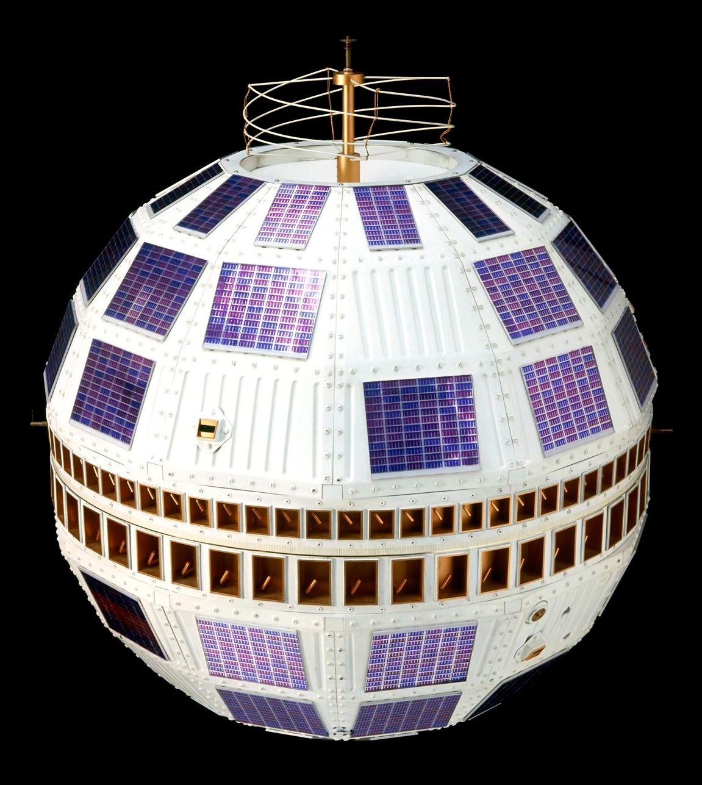

A communications satellite is an artificial satellite that relays and amplifies radio telecommunication signals via a transponder, establishing communication channels between transmitters and receivers at different locations on Earth’s surface. Applications include television broadcasting, telephone, radio, internet access, and military communications. The operating principle exploits the fact that radio waves travel by line of sight: a satellite positioned hundreds or tens of thousands of kilometres above the surface can simultaneously ‘see’ two widely separated ground stations and relay signals between them.

Science Museum Group (CC BY 4.0)
{kind=link}
Arthur C. Clarke and the Geostationary Concept
In October 1945, British author and engineer Arthur C. Clarke published “Extra-Terrestrial Relays: Can Rocket Stations Give World-wide Radio Coverage?” in Wireless World magazine. Clarke proposed placing relay stations in orbits at approximately 42,000 km above Earth’s surface, where the orbital period equals Earth’s rotation period (24 hours), making the satellite appear stationary as seen from the ground. He calculated that just three such satellites, evenly spaced above the equator, would provide near-global radio coverage. The geostationary orbit is now officially known as the Clarke Orbit or Clarke Belt in his honour.
Active and Passive Satellites
Passive satellites — such as Echo 1 (launched 1960), a 30-metre aluminised Mylar balloon in low Earth orbit — merely reflect radio signals back toward Earth. Signal strength is very weak due to free-space path loss, and passive satellites proved impractical for commercial use. All modern communications satellites are active: they receive, amplify, frequency-shift, and retransmit the signal. The core element of an active satellite is the transponder, which on the ‘bent-pipe’ principle receives an uplink signal, shifts it to a different downlink frequency, amplifies it, and retransmits it to Earth without onboard decoding. Key transponder components include a low-noise amplifier, a frequency translator, and a power amplifier (typically a travelling-wave tube). Modern regenerative transponders additionally demodulate and re-encode the signal aboard the satellite, improving signal-to-noise ratios. A single communications satellite typically carries dozens of transponders, each with a bandwidth of tens of megahertz.
Orbital Types
Geostationary Earth orbit (GEO) at 35,786 km altitude provides a 24-hour orbital period, allowing ground antennas to remain fixed. Three GEO satellites at equal longitude spacings provide near-global coverage, excluding polar regions. The fundamental round-trip signal latency is 480–600 ms. Medium Earth orbit (MEO), at altitudes of 2,000–36,000 km, offers lower latency than GEO and requires fewer satellites than LEO for global coverage; the O3b system at 8,063 km is a major example. Low Earth orbit (LEO), at 160–2,000 km, provides latencies of 20–40 ms but requires large constellations for continuous coverage. Highly elliptical Molniya orbits, with 12-hour periods and apogees over high northern latitudes, were developed by the Soviet Union to serve Arctic regions where GEO satellites have poor visibility; Molniya 1 was first launched on 23 April 1965.
History
Project SCORE, launched 18 December 1958, was the first purpose-built active relay satellite and transmitted a pre-recorded message from President Eisenhower. Telstar 1, built by Bell Telephone Laboratories and launched on 10 July 1962, occupied a medium-altitude elliptical orbit and on 23 July 1962 relayed the first publicly available live transatlantic television signal. It also transmitted the first satellite telephone call and synchronised clocks between continents to within 1 microsecond. The Syncom programme (Hughes Aircraft Company) produced the world’s first geosynchronous communications satellite with Syncom 2 in July 1963; Syncom 3 (August 1964) was the first true geostationary satellite, broadcasting the 1964 Tokyo Summer Olympics to the United States. The first commercial geostationary satellite, Intelsat I (Early Bird), was launched on 6 April 1965 and provided telephone, television, and telefacsimile links between Europe and North America; though planned for an 18-month service life, it remained operational for over four years.
Modern Constellations
The 2020s have seen a major shift toward LEO constellations providing low-latency broadband internet. The Iridium constellation of 66 operational satellites at 86.4° orbital inclination provides global satellite phone and data coverage, including polar regions. Starlink, operated by SpaceX, comprised more than 10,020 satellites in LEO as of early 2026 — the largest satellite constellation ever deployed — and serves approximately 150 countries and territories with latencies of 20–40 ms. OneWeb and Amazon Kuiper represent further major LEO internet programmes. The growth of LEO constellations has reduced demand for new GEO satellites while vastly increasing the total number of objects in Earth orbit.
Frequency Bands
The International Telecommunication Union allocates satellite frequencies to minimise interference. The principal bands in use are L-band (1–2 GHz), used for mobile services and maritime communications; C-band (4–8 GHz), used for broadcast television and enterprise networks, with low susceptibility to rain fade requiring large antennas; Ku-band (12–18 GHz), widely adopted for consumer television and in-flight Wi-Fi with compact dish antennas; and Ka-band (26–40 GHz), used for high-throughput internet and 5G backhaul, offering the highest capacity but greatest susceptibility to rain fade — the absorption and scattering of microwave signals by water droplets. Uplink frequencies (ground to satellite) are always higher than downlink frequencies within a given band, compensating for the satellite’s limited transmit power and preventing self-jamming through a single antenna.